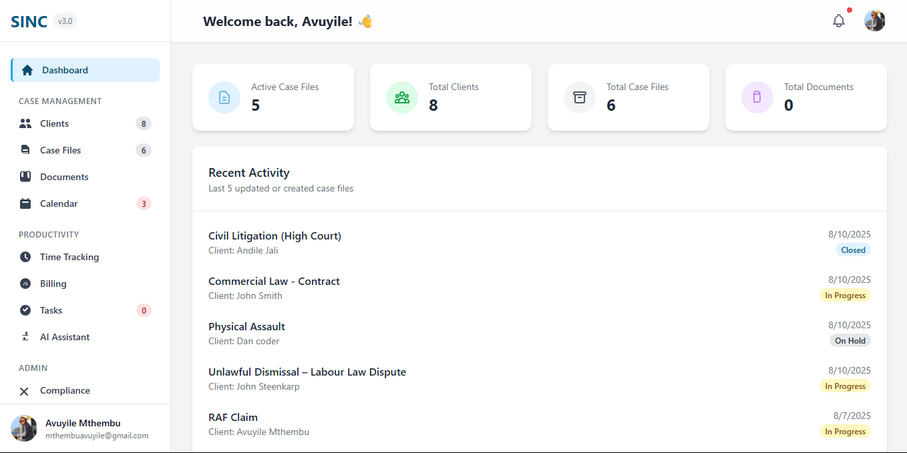

Smart Case Management
Keeps every client detail, case note, document, and status update structured and accessible in a single interface designed for efficiency.
SINC is an all-in-one workspace designed for South African legal professionals to manage cases, track billable time, and stay compliant — all from one secure dashboard.
Experience a modern, intuitive dashboard with real-time activity feeds, performance statistics, and case overviews that keep you in control of your entire practice at a glance.

Digitise your practice with SINC and centralise every matter in one organised, searchable system.
Our integrated timer runs as you work, ensuring every minute is captured and converted into accurate, ZAR-denominated invoices in just one click.
SINC is built with a security-first architecture to safeguard sensitive client data, giving you peace of mind while you focus on your cases.
Designed specifically for the workflows, billing practices, and administrative rigor of South African law firms.
Keeps every client detail, case note, document, and status update structured and accessible in a single interface designed for efficiency.
Capture billable time in real time, reduce revenue leakage, and maintain transparent billing practices aligned with South African standards.
Provides encrypted storage for mandates, pleadings, contracts, and evidence — keeping your firm’s most critical information protected and accessible only to authorised users.
Fully optimised for ZAR invoicing, SINC seamlessly aligns with South African billing practices and client expectations.
Designed to support the administrative rigor required by the Legal Practice Council, SINC helps you maintain organised records and structured workflows.
Proudly based in Durban, SINC offers local insight and responsive support tailored to the realities of South African legal practice.
Join the growing number of Durban-based practitioners using SINC to reclaim their time, protect their revenue, and focus on what truly matters — the law.